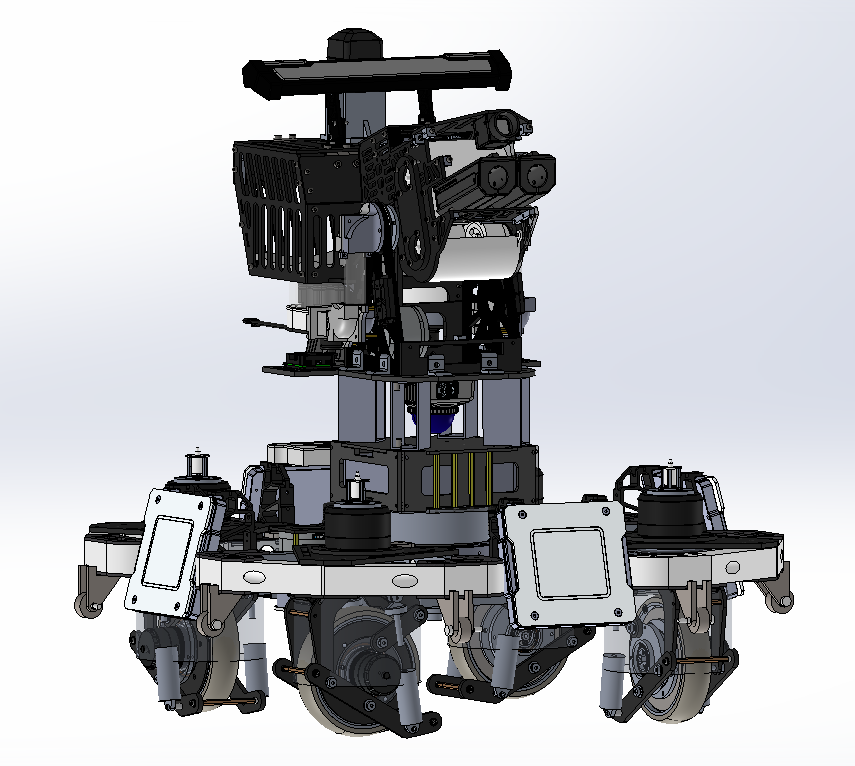
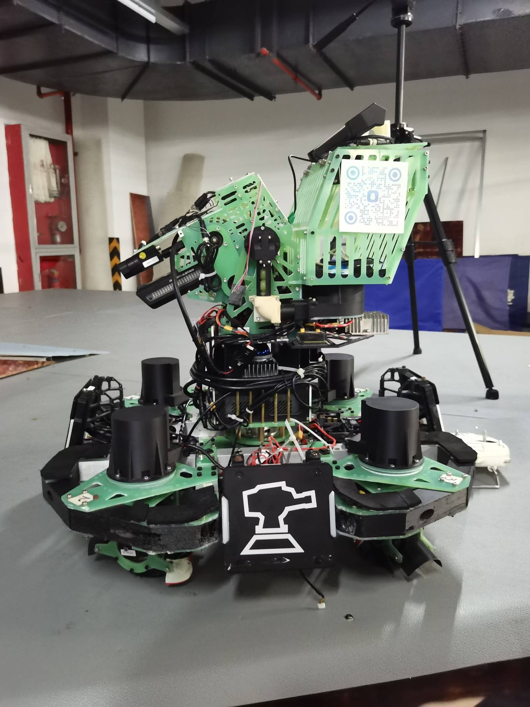
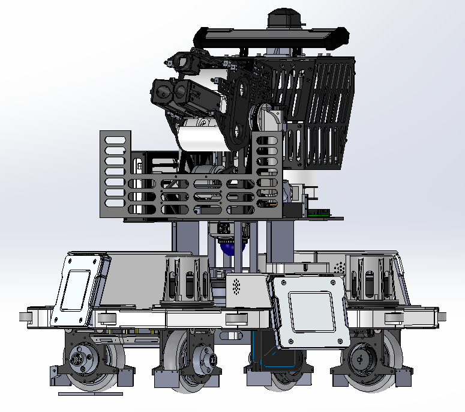

RoboMaster sentry robot: from clean sheet to national first prize
Sentry group member (2023) advancing to sentry mechanical lead (2024) on a two-season, national-title design.
- Designed the synchro-drive chassis and wheel sets from scratch;
- Recentered the gimbal mass to eliminate spin drift, giving stable decoupled rotation;
- Drove the season-2 lightweighting program (45.5% lighter wheel sets) and the five-camera perception layout, contributing to a national first prize in the sentry category (2023).
Context
In RoboMaster University Championship, the sentry is the team's fully autonomous robot: it must navigate the arena, perceive opponents, and engage them without an operator. A major rules change at the start of the 2023 season made the previous sentry design obsolete, so the robot had to be redesigned from scratch.
Season 2023 — zero to one
Mecanum wheels lose significant power to friction, so we developed our own synchro-drive wheel system for the chassis (see the drivetrain deep dive). The robot carried two side-by-side launching mechanisms within the rule envelope, and a Livox MID-360 omnidirectional LiDAR mounted at the center of the gimbal yaw axis for mapping and navigation. The robot's performance earned the team the national first prize in the sentry category.


Post-season analysis
Competition exposed three problems with the v1 robot:
- Overweight. The robot hit the 28.5 kg class limit; glass-fiber panels needed to become carbon fiber.
- Off-axis gimbal mass. With the magazine on one side of the gimbal, the center of gravity shifted sideways — during chassis spin with a decoupled gimbal, the robot drifted backwards.
- Accuracy and integration. Launching accuracy and mechanical–electrical joint commissioning needed systematic polish.
Season 2024 — the iteration
- Recentered the launching nacelle on the yaw axis, cutting the gimbal's moment of inertia and eliminating the spin-drift behavior.
- Two new wheel-set versions attacked the heaviest chassis subsystem — a 45.5% weight reduction per wheel set — while structural panels went through static analysis for further weight cuts.
- Redesigned the yaw-axis shafting to simplify bearing replacement between matches.
- Added omnidirectional perception: a five-camera ring on the yaw axis.
- Repositioned the NUC compute unit as a counterweight, balancing the gimbal while lowering the center of gravity, and added a tuned suspension system.
